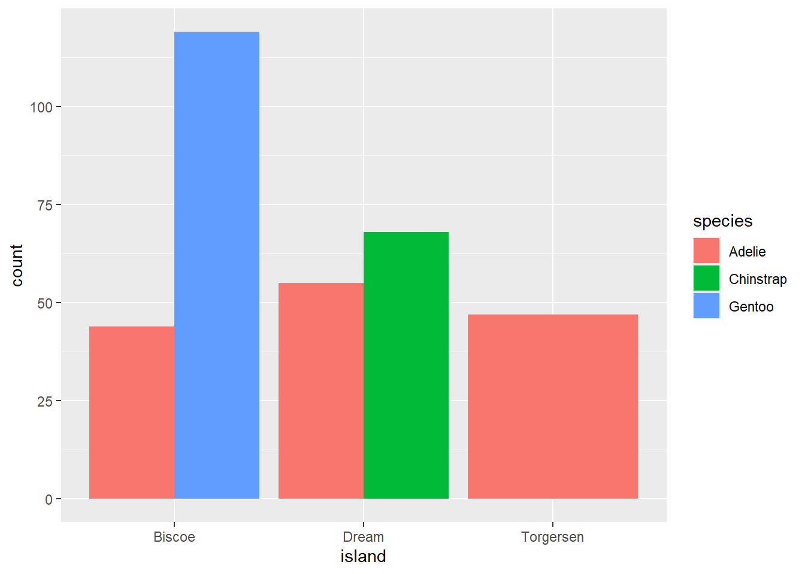
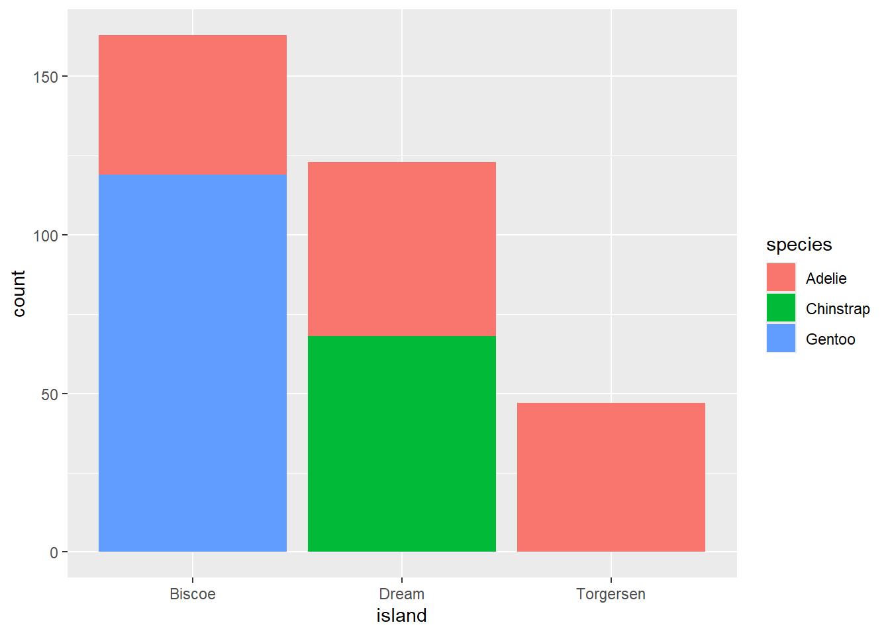
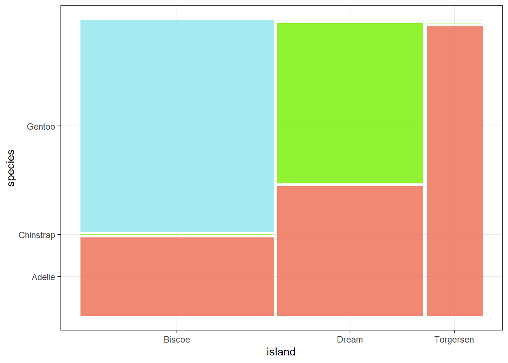

3 Categorical Data
3.1 Palmer Penguins
Continuing on with the penguins dataset, we will explore plots that only contain categorical variables.
One Categorical Variable
Since we were looking at species in the previous chapter, let’s take a look at how many penguins were observed in each species. Because we’re dealing with one categorical variable, a bar plot is appropriate.
library(ggplot2)
library(tidyverse)
library(palmerpenguins)
clean_penguins <- na.omit(penguins)
ggplot(clean_penguins, aes(x = species)) +
geom_bar(fill = c("coral2", "chartreuse2", "cadetblue2"),
col = c("coral3", "chartreuse4", "cadetblue4")) +
labs(x = "Penguin Species", y = "Count") +
theme_bw()
library(ggplot2)
library(tidyverse)
library(palmerpenguins)
clean_penguins <- na.omit(penguins)
ggplot(clean_penguins, aes(x = species)) +
geom_bar(fill = c("coral2", "chartreuse2", "cadetblue2"),
col = c("coral3", "chartreuse4", "cadetblue4")) +
labs(x = "Penguin Species", y = "Count") +
theme_bw()We can also explore proportions to understand how each species contributes to the total sample.
Adelie penguins make up a much larger proportion of the sample, while Chinstrap penguins account for the smallest. It’s important to consider how such imbalances in your dataset could influence your interpretation.
We can generate a mosaic plot for species. To do so, we will need to install ggmosaic.
library(ggmosaic)
ggplot(data=clean_penguins, aes(col=species))+
geom_mosaic(aes(x=product(species)), fill=c("coral2", "chartreuse2", "cadetblue2"))+
theme_bw() 
The wider the tile, the greater the proportion that species contributes. Adelie has the widest tile, which confirms it makes up the largest share of the sample.
Two Categorical Variables
What if we want to look at penguin species by the island where they were observed? We are now dealing with two categorical variables. We can consider a grouped barchart:
ggplot(clean_penguins, aes(x = island, fill = species)) +
geom_bar(position = "dodge")
Or stacked:
table(clean_penguins$species, clean_penguins$island)
Biscoe Dream Torgersen
Adelie 44 55 47
Chinstrap 0 68 0
Gentoo 119 0 0ggplot(clean_penguins, aes(x = island, fill = species)) +
geom_bar(position = "stack")
Mosaic plots work well here too.
ggplot(clean_penguins) +
geom_mosaic(aes(x = product(species, island)),
fill = rep(c("coral2", "chartreuse2", "cadetblue2"),3)) +
theme_bw()
From these plots you can see:
Adelie appear on Biscoe, Dream, and Torgersen in roughly similar counts.
Chinstrap are observed only on Dream.
Gentoo are observed only on Biscoe.
These patterns help explain why Adelie dominate overall, and they also show that species presence varies by island.
3.2 Exercise
- Now that you are more comfortable generating plots and summary statistics in R, it is a good time to test your skills on a new dataset, the built-in iris dataset. This dataset is already preloaded in RStudio, so there is no need to import anything.
To make sure it is available, you can view it by running
View(iris)This will open the dataset in a new tab in RStudio so you can explore its structure and variables before starting your analysis.
How many variables are in the iris dataset?
How many observations are in the iris dataset?
How many categorical variables are in the iris dataset?
How many numerical variables are in the iris dataset?
How many species are in the iris dataset?
What are the names of the three species in the iris dataset? Please list them in alphabetical order, separated by commas (for example: x, y, z)
Is Species nominal or ordinal?
Is Sepal.Length continuous or discrete?
What is the mean sepal width of iris varieties rounded to one decimal place?
What is an appropriate plot to visualise petal width against species?
What is an appropriate plot to visualise petal width against sepal width?